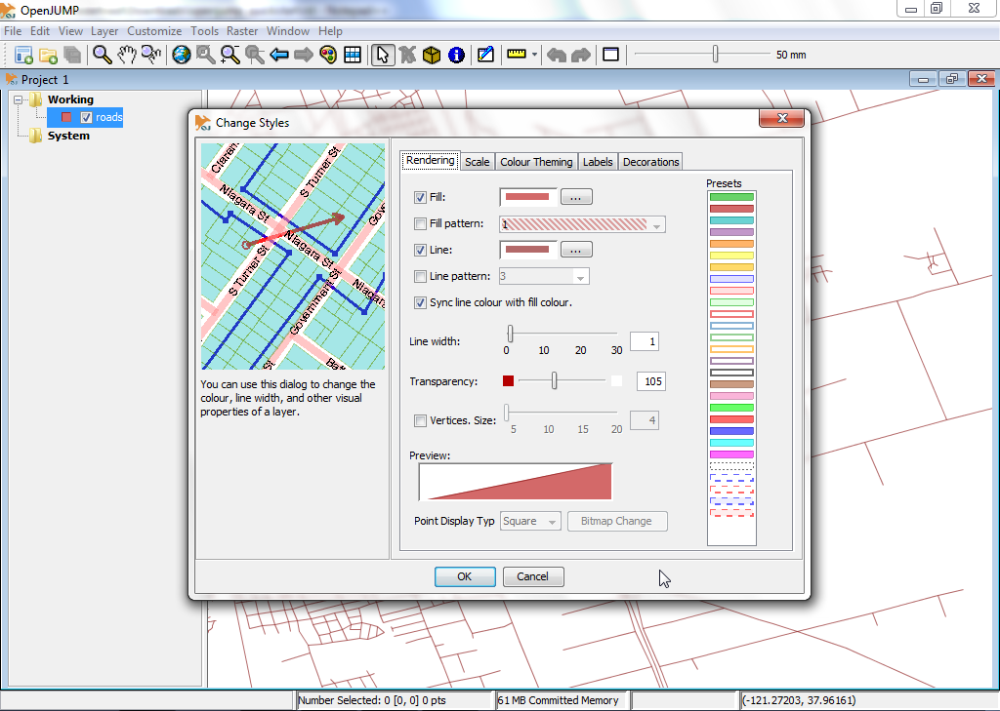
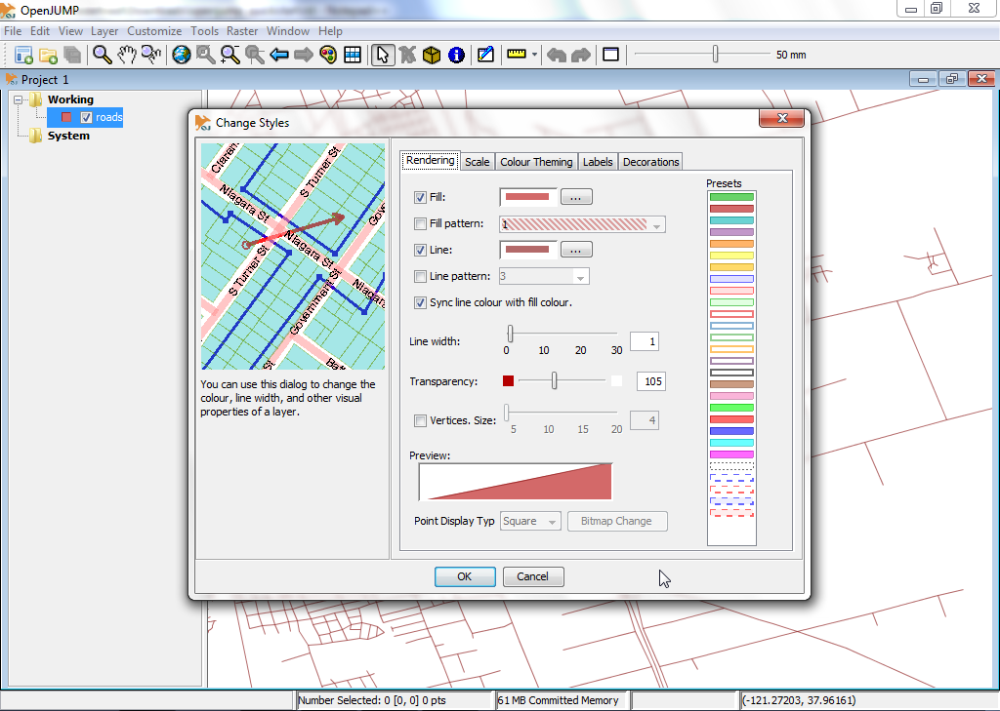

Guida rapida OpenJUMP GIS¶
OpenJUMP è un programma GIS desktop che permette di visualizzare e modificare facilmente i dati GIS vettoriali. L’edizione PLUS supporta anche l’analisi di dati raster.
Contenuti
Avvia OpenJUMP¶
Dal desktop, scegli .
L’interfaccia utente di OpenJUMP ha quattro (4) componenti di base.
[1] Il primo è una barra di menu di primo livello per accedere alla maggior parte delle funzionalità.
[2] La seconda è una barra degli strumenti principale che si trova proprio sotto la barra dei menu. I pulsanti danno accesso alle funzioni di visualizzazione e navigazione più importanti.
[3] La terza è una vista ad albero sulla sinistra che mostra la lista dei layer del progetto attivo.
[4] La quarta è la vista della mappa. Questa è la mappa vera e propria dove viene data una rappresentazione grafica dei dati spaziali in ogni layer.
Infine c’è una barra di informazioni in basso che mostra le coordinate del puntatore del mouse, i rapporti di elaborazione e l’uso della memoria. La finestra di un progetto contiene una lista dei layer e una vista dei layer. Ogni istanza di OpenJUMP può contenere più progetti. In questo avvio rapido, lavoreremo solo con una singola finestra.

Apri un shapefile¶
Sulla barra del menu di livello superiore in OpenJUMP, seleziona . Questo ti presenterà una finestra di dialogo che ti permetterà di aprire file contenenti dati geospaziali.
Cerca uno shapefile. Cerca un file con estensione .shp (per esempio sul LiveDVD sotto /home/user/data/natural_earth2/ne_10m_admin_0_countries.shp).
Seleziona il file e clicca sul pulsante Finish della finestra di dialogo. Dopo qualche istante, sarai in grado di vedere i dati del tuo shapefile nella Vista mappa. Vedrai anche un nuovo layer creato per i tuoi dati nella Layer List. Il nome del layer corrisponderà al nome dello shapefile.

Suggerimento
Un’altra opzione più veloce è quella di trascinare direttamente il tuo shapefile nella Layer View.
Stile di un layer¶
Nella lista dei layer, clicca con il tasto destro sul nome del layer. Questo mostrerà un menu a comparsa.
Scegli . La finestra di dialogo Cambia stili ha cinque (5) schede che ti permettono di cambiare il modo in cui il layer viene visualizzato nella vista mappa. Questo include la modifica del colore del tratto, il colore di riempimento, lo stile e lo spessore della linea, la trasparenza, l’aggiunta di etichette e la determinazione della scala massima e minima di visualizzazione del layer.
 

{kind=link}
Modifica le geometrie degli elementi in un layer¶
Nella lista dei layer, clicca con il tasto destro sul nome del layer. Questo mostrerà un menu a comparsa.
Clicca sulla voce di menu «Editable» in modo che venga mostrato un segno di spunta. Questo aprirà una nuova barra degli strumenti fluttuante sopra la Vista Mappa sul lato destro. Questa barra degli strumenti ha una serie di pulsanti che si possono usare per modificare la geometria di un elemento geografico.


Prova una rapida modifica. Prima devi selezionare una geometria e poi spostare un punto della geometria. Per farlo, clicca prima il pulsante che mostra un cursore del mouse nella barra degli strumenti di modifica (pulsante in alto a sinistra).
Attivalo e clicca su un singolo elemento nella Vista mappa per selezionarlo. Se la selezione ha funzionato, allora il colore della linea dell’elemento dovrebbe cambiare in giallo e piccoli quadrati gialli appaiono in ogni punto angolare (vertice) nella geometria dell’elemento.

Poi, clicca sul pulsante che mostra un mirino blu con un quadrato giallo nel mezzo, il Move Vertex Tool (passando sopra i pulsanti ti dà una descrizione del pulsante). Ora dovresti vedere il cursore del tuo mouse trasformarsi in un piccolo mirino nero quando lo muovi sulla vista della mappa.

Prova ad usarlo per spostare uno dei vertici/punti della geometria che hai selezionato prima, cliccando su uno dei vertici e trascinandolo (lasciando premuto il pulsante del mouse).

E ora?¶
Questo è solo il primo passo sulla strada per usare OpenJUMP. C’è ancora molto altro materiale da scoprire.
Puoi scaricare i tutorial per OpenJUMP qui: https://sourceforge.net/projects/jump-pilot/files/Documentation/
Puoi leggere il wiki di OpenJUMP qui: http://ojwiki.soldin.de/index.php?title=Main_Page
Puoi ottenere aiuto velocemente sulla mailing list degli utenti di OpenJUMP: https://groups.google.com/forum/#!forum/openjump-users
L’ultima versione di OpenJUMP può essere trovata qui: https://sourceforge.net/projects/jump-pilot/files/OpenJUMP/